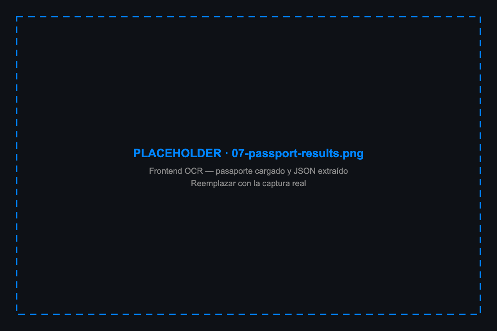

El kernel del scheduler ya gestiona recursos escasos. Una GPU es solo otro resources.limits.
Inferencia es ráfagas, no constante. HPA y KPA están hechos para eso.
Múltiples modelos, múltiples equipos, mismo cluster. Namespaces y RBAC.
Observability, ingress, secrets, network policies. Ya están — no se reinventan para AI.
@app.post("/predict") def predict(img): return model.predict(img)
apiVersion: serving.kserve.io/v1alpha1 kind: ServingRuntime spec: containers: - name: kserve-container image: vllm/vllm-openai:v0.11.0 args: [--model, Qwen/Qwen3-VL-4B-Instruct]
apiVersion: serving.kserve.io/v1beta1 kind: InferenceService metadata: name: qwen3-vl-4b annotations: serving.kserve.io/deploymentMode: RawDeployment spec: predictor: runtimeClassName: nvidia model: modelFormat: name: huggingface runtime: vllm-qwen-vl

{
"surname": "HERNANDEZ",
"given_names": "JEFFRY",
"passport_number": "AB1234567",
"date_of_birth": "1990-03-15",
"date_of_expiry": "2030-01-01",
"mrz": { ... }
}
# un comando $ curl -sfL https://get.k3s.io | sh - $ kubectl get nodes NAME STATUS VERSION gpu-node Ready v1.34.1+k3s1
apiVersion: serving.kserve.io/v1alpha1 kind: ServingRuntime metadata: name: vllm-qwen-vl spec: supportedModelFormats: - name: huggingface containers: - name: kserve-container image: vllm/vllm-openai:v0.11.0
Invalid value: "hf://...":
storageUri must be one of:
gs:// | s3:// | pvc:// |
file:// | https://
args: - --model=Qwen/Qwen3-VL-4B-Instruct - --served-model-name=qwen3-vl-4b - --dtype=float16 - --max-model-len=8192
image: vllm/vllm-openai:v0.11.0 # nunca :latest
$ kubectl get pods vllm-old-xxx Running 2d vllm-new-yyy Pending ∞ # Insufficient nvidia.com/gpu
$ kubectl patch deploy/vllm-predictor \
-p '{"spec":{"strategy":{
"type":"Recreate"}}}'
# apps/api/app/ocr.py OCR_BACKEND = os.getenv("OCR_BACKEND", "openai").lower() OLLAMA_HOST = os.getenv("OLLAMA_HOST", "http://localhost:11434") OPENAI_BASE_URL = os.getenv("OPENAI_BASE_URL", "http://qwen3-vl-4b-predictor" ".default.svc.cluster.local") def extract(image_bytes): if OCR_BACKEND == "ollama": return _extract_ollama(image_bytes) # SDK ollama return _extract_openai(image_bytes) # httpx → vLLM
{
"surname": "HERNANDEZ",
"passport_number": "AB1234567", // ✓
"date_of_birth": "1990-03-15", // ✓
"date_of_expiry": "2030-01-01", // ✓
"sex": "M" // ✓
}
$ scripts/provision.sh ┌─ on the VM ─────────────────────┐ scripts/bootstrap.sh K3s + drivers + container toolkit + kernel pin └─────────────────────────────────┘ ┌─ local (kubeconfig) ────────────┐ install-cluster-deps.sh NVIDIA Device Plugin cert-manager KServe v0.14 (RawDeployment) └─────────────────────────────────┘ ┌─ helm ──────────────────────────┐ helm install ocr-model charts/model helm install ocr-api charts/api helm install ocr-frontend charts/frontend └─────────────────────────────────┘